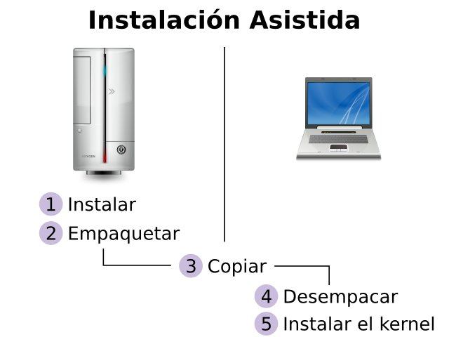

Gentoo Linux en una netbook (2010, parte 1)
Documento paso a paso la instalación de Gentoo Linux en una netbook con procesador Intel Atom N280.
20 November 2010
Después de varios meses de tener una instalación completa de KDE en mi netbook comenzé a pensar de que el poderoso y grande ambiente gráfico le restaba potencial a mi equipo. Era frecuente que el administrador de archivos Dolphin demorara algunos segundos en cargar. También la carga y velocidad de respuesta de la suite de información personal (PIM), en particular de KMail, era lenta.
El concepto de una netbook involucra un procesador versátil y modesto. El Intel Atom fue diseñado con ese fin, hereda mucha tecnología de la familia Pentium y consume poca energía para prolongar la duración de la carga en un equipo portátil. Pero no se trata de un procesador de alto rendimiento. Recordemos que fue Windows XP y no Windows Vista el que apareció preinstalado en las netbooks a la venta, por obvias razones.
Antes de buscar la reinstalación, me pregunté... ¿de verdad necesito vistosos elementos en mi escritorio?, ¿vale la pena que Plasma me consuma desde el 5% al 50% de mi procesador y en consecuencia más carga de mi batería?. Fue entonces que decidí arriesgarme, y tomar un entorno más simple, más rápido, que me consumiera menos recursos.
Siguiendo los pasos de esta guía, lograremos tener un sistema Gentoo Linux con tres opciones gráficas de trabajo:
- Fluxbox es un gestor de ventanas muy ligero.
- XFCE4 es un entorno gráfico ligero con una buena cantidad de comodidades.
- Compiz es un gestor de ventanas modular con efectos espectaculares.
Aclaro que lo que sigue es solo una guía; los pasos que su servidor ha ejecutado. Usted tiene la libertad de tomar el rumbo que guste. No deje de consultar la Documentación Oficial de Instalación de Gentoo.
A continuación, documento paso a paso la instalación de Gentoo Linux en una netbook con procesador Intel Atom N280. Le informo que los comandos con # son ejecutados con el super-usuario root, que de hecho, son la mayoría.
Instalación asistida

No dudo que una netbook pueda compilar todos los paquetes que necesito instalar para mi escritorio con Gentoo Linux; pero tardaría mucho, mucho tiempo. Es por ello que le paso esa labor a un equipo más poderoso; que lo haga en menos tiempo.
Ante esto... si los equipos son distintos... ¿funcionará lo que compile uno en el otro?. Para ello hay que revisar las similitudes y diferencias entre los procesadores de ambos equipos. Revise en Gentoo Wiki el documento Safe CFlags el cual muestra los parámetros recomendados de compilación para cada procesador.
Afortunadamente, en el momento de escribir esta guía, tanto el Intel DualCore como el Atom 230, 330 N-Series tienen los mismos parámetros de compilación:
CHOST="i686-pc-linux-gnu"
CFLAGS="-march=prescott -O2 -fomit-frame-pointer -pipe"
CXXFLAGS="${CFLAGS}"
También es posible hacer compilación asistida si el procesador del equipo poderoso tiene la misma arquitectura y/o es más nuevo que el de los equipos de destino. Cuestión de probarlo. Por ejemplo, las compilaciones hechas con parámetros para el VIA C7 en el Intel DualCore me han funcionado:
CHOST="i686-pc-linux-gnu"
CFLAGS="-march=i686 -mmmx -msse -msse2 -msse3 -O2 -pipe -fomit-frame-pointer"
CXXFLAGS="${CFLAGS}"
Para hacer una instalación asistida elija una ubicación en el disco duro del equipo poderoso con suficiente espacio; lo necesario para contener el sistema completo y los archivos que descargue. Para dar una cifra, sugiero unos 8 GB libres. En mi equipo poderoso uso /mnt/archivos/instalaciones para ese fin. Voy a crear ahí un directorio con el nombre prescott:
# cd /mnt/archivos/instalaciones
# mkdir prescott
Use el stage más reciente
Mi sitio predilecto para descargar el stage es en el Oregon State University - Open Source Lab en éste URL: http://gentoo.osuosl.org/releases/. Note que parece un nuevo stage frecuentemente. Le recomiendo que siempre use el stage más nuevo. Cuando escribí esta guía, bajé el stage x86 del 9 de noviembre de 2010:
# cd /mnt/archivos/software/gentoo
# wget http://gentoo.osuosl.org/releases/x86/current-stage3/stage3-i686-20101109.tar.bz2
# wget http://gentoo.osuosl.org/releases/x86/current-stage3/stage3-i686-20101109.tar.bz2.CONTENTS
# wget http://gentoo.osuosl.org/releases/x86/current-stage3/stage3-i686-20101109.tar.bz2.DIGESTS
# wget http://gentoo.osuosl.org/releases/x86/current-stage3/stage3-i686-20101109.tar.bz2.DIGESTS.asc
Compruebe la integridad de los archivos descargados con...
# md5sum -c stage3-i686-20101109.tar.bz2.DIGESTS
Desempaque.
# cd /mnt/archivos/instalaciones/prescott
# tar xvf /mnt/archivos/software/gentoo/stage3-i686-20101109.tar.bz2
Monte dev y proc.
# mount -t proc none /mnt/archivos/instalaciones/prescott/proc
# mount -o bind /dev /mnt/archivos/instalaciones/prescott/dev
Copie la configuración de resolución de nombres. Esto es necesario para cuando el Gentoo esté enjaulado por chroot, así sabrá cual es el DNS de su red.
# cp /etc/resolv.conf /mnt/archivos/instalaciones/prescott/etc/
Ingrese a al stage con chroot.
# chroot /mnt/archivos/instalaciones/prescott /bin/bash
# env-update
# source /etc/profile
# export PS1="(prescott) $PS1"
Configure
Edite /etc/make.conf
# nano -w /etc/make.conf
Para el cual sugiero el siguiente contenido...
#
# /etc/make.conf
#
# Para Intel Prescott (Dual Core, Atom) de 32 bits
#
# WARNING: Changing your CHOST is not something that should be done lightly.
# Please consult http://www.gentoo.org/doc/en/change-chost.xml before changing.
CHOST="i686-pc-linux-gnu"
#
# Netbook con Intel Atom N280 @ 1.66 GHz
#
CFLAGS="-march=prescott -O2 -fomit-frame-pointer -pipe"
CXXFLAGS="${CFLAGS}"
# Puede hacer tres compilaciones en paralelo
MAKEOPTS="-j3"
# Espaniol como lengua
LINGUAS="es es_MX"
# Aceptar todas las licencias
ACCEPT_LICENSE="*"
#
# Use Flags
#
# Intel Dual Core, Atom
USE="acpi laptop mmx mmxext sse sse2 ssse3 threads"
#
# Servidor Portage
#
SERVIDOR_PORTAGE=otroequipo.tured.lan
PORTDIR=/usr/portage
DISTDIR=${PORTDIR}/distfiles
SYNC=rsync://${SERVIDOR_PORTAGE}/gentoo-portage
FETCHCOMMAND="rsync rsync://${SERVIDOR_PORTAGE}/gentoo-distfiles/\\${FILE} ${DISTDIR}"
Observe el final de /etc/make.conf donde configuro que las descargas se hagan desde otroequipo.tured.lan. Sustituya éste por el nombre de un equipo o por la dirección IP del equipo que comparta su portage con el daemon rsyncd. En cambio, si no usa un equipo para compartir el portage entonces omita las cinco últimas líneas para que las descargas se hagan desde internet.
Configure /etc/locale.gen
# nano -w /etc/locale.gen
Con este contenido...
# EEUU
en_US ISO-8859-1
en_US.UTF-8 UTF-8
# Espania
es_ES ISO-8859-1
es_ES.UTF-8 UTF-8
es_ES@euro ISO-8859-15
# Mexico
es_MX ISO-8859-1
es_MX.UTF-8 UTF-8
Luego ejecute...
# locale-gen
Descargue el portage.
# mkdir /usr/portage
# emerge --sync
Vamos a crear un nuevo archivo llamado 02locales:
# nano -w /etc/env.d/02locales
El archivo /etc/env.d/02locales contiene los parámetros de nuestro idioma y región:
#
# /etc/env.d/02locales
#
LANG="es_MX.UTF-8"
LANGUAGE="es_MX.UTF-8"
LC_ALL="es_MX.UTF-8"
Configure la zona horaria con:
# nano -w /etc/conf.d/clock
Esta configuración hace que se ajuste la hora al iniciar o terminar el Horario de verano conocido en el idioma inglés como Daylight Saving Time (DST).
TIMEZONE="Mexico/General"
Configure el mapa de caracteres de la terminal con:
# nano -w /etc/conf.d/consolefont
Para tener un mayor soporte de caracteres uso:
CONSOLEFONT="lat9v-16"
Configure el mapa del teclado con:
# nano -w /etc/conf.d/keymaps
La gran mayoría de los teclados de computadoras de México funcionan con:
KEYMAP="la-latin1"
Pero hay también un gran número de teclados españoles, se distinguen por tener la tecla "Ç", para esos hay que usar:
KEYMAP="es"
Configure el nombre del equipo con:
# nano -w /etc/conf.d/hostname
Recargue (de nuevo) las variables del entorno para asegurarnos que se apliquen los cambios hechos hasta el momento.
# env-update
# source /etc/profile
# export PS1="(prescott) $PS1"
¿Quiere recompilar todo?
Es su decisión tener todos los paquetes del stage compilados a sus parámetros en make.conf. Si así lo desea; ejecute emerge -e world. Pero le advierto que toma bastante tiempo. Si no quiere hacerlo, no hay problema, simplemente cada paquete nuevo que instale o actualice será compilado con los parámetros de make.conf.
# emerge -pe world
# emerge -e world
Kernel Linux
Instale ccache.
# emerge ccache
# ccache -M 2G
# export PATH="/usr/lib/ccache/bin:${PATH}"
Descargue el kernel.
# emerge gentoo-sources
# cd /usr/src/linux
Si ya he compilado la misma versión con anterioridad, copie el archivo .config al directorio /usr/src/linux
# make menuconfig
# make
# make modules_install
Como se trata de una compilación asistida, no voy a decirle que ejecute make install para instalar el kernel; eso lo haré cuando haya copiado la instalación al equipo final. Lo verá en la siguiente parte de esta guía.
Configure la tabla de particiones
Edite /etc/fstab
# nano -w /etc/fstab
Este es un ejemplo de /etc/fstab
# <fs> <mountpoint> <type> <opts> <dump/pass>
/dev/sda1 /boot ext2 noauto,noatime 1 2
/dev/sda2 /home ext4 defaults 0 1
/dev/sda3 /mnt/respaldos ext4 noauto 0 0
/dev/sda5 none swap sw 0 0
/dev/sda6 /mnt/anterior ext4 noauto 0 0
/dev/sda7 /mnt/ubuntu ext4 noauto 0 0
/dev/sda8 / ext4 noatime 0 1
/dev/sda9 /usr/portage reiserfs defaults 0 1
/dev/sda10 /tmp reiserfs noatime 0 1
/dev/sda11 /mnt/archivos ext4 defaults 0 1
Fin de la primera parte
Termina aquí la primera parte con una instalación de Gentoo Linux configurada y con un kernel preparado. En la segunda parte, cambiaremos el profile a desktop e iremos instalando las aplicaciones favoritas de su servidor.